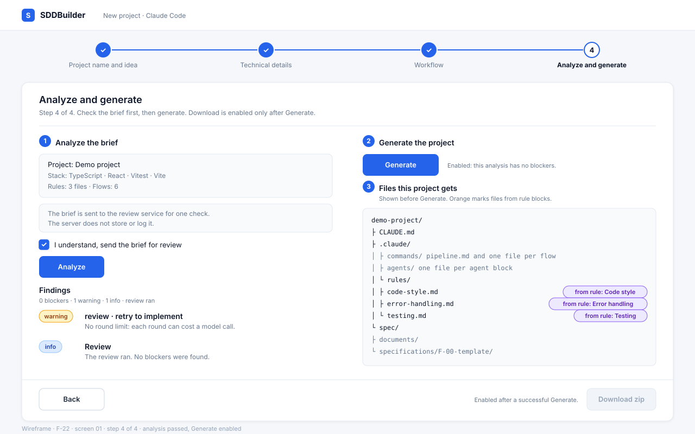
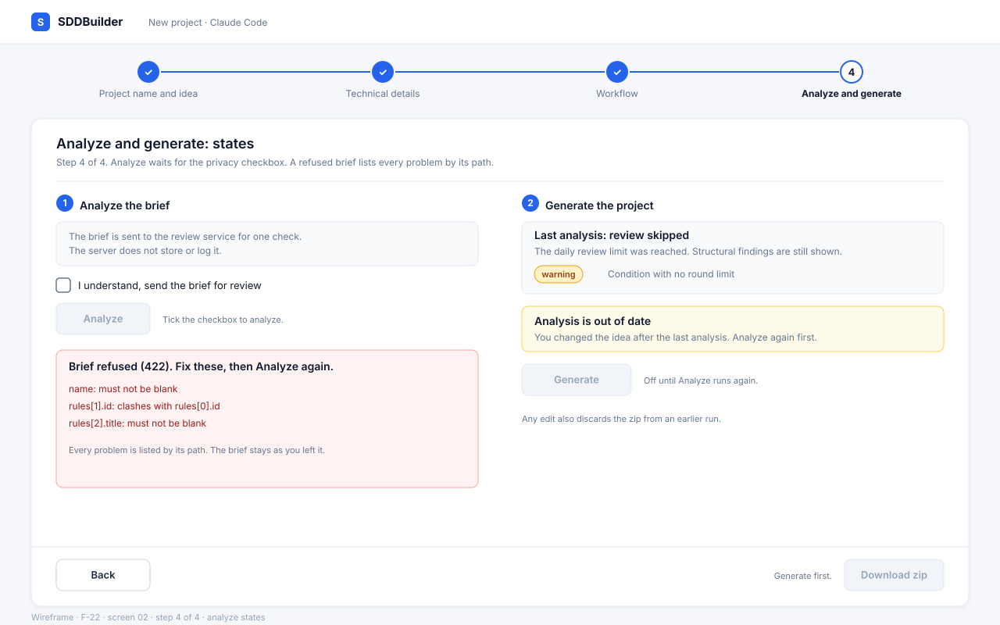
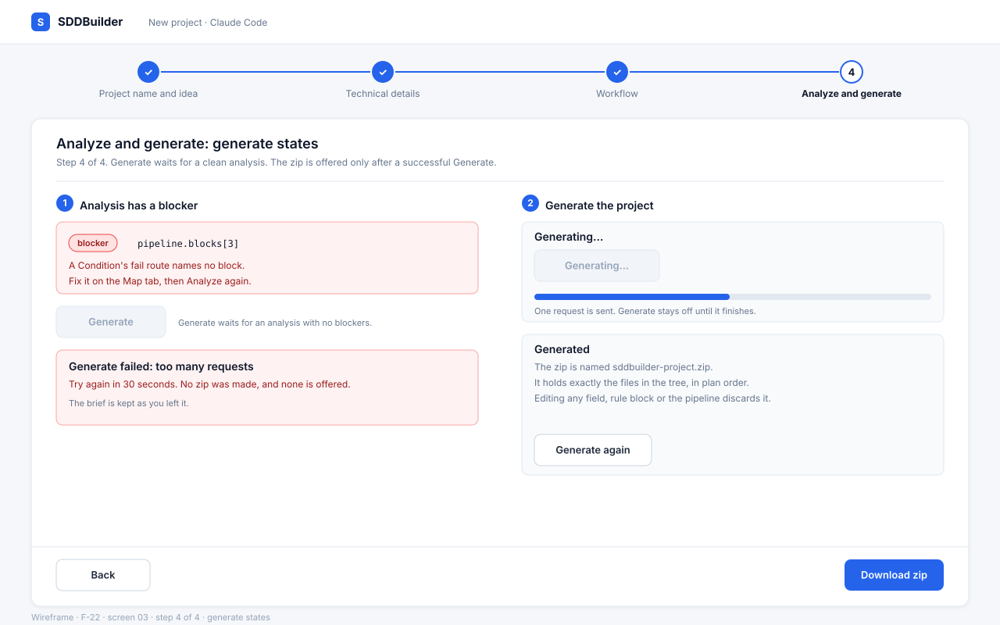

Numbered sub-steps: 1 Analyze, 2 Generate, 3 Files. Wireframes only; read screens.md.
Analyze with the privacy checkbox, findings, Generate enabled, the file tree, and Download zip disabled until generated.

Checkbox not ticked, a refused brief listing every problem, a skipped review, and an analysis that is out of date.

Generate blocked by a blocker, a failed generate (429), generating, and generated.
